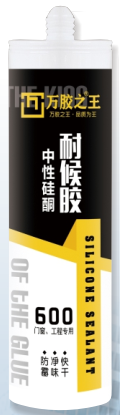
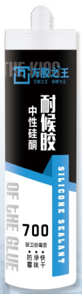

万胶之王-600 300ml 中性
THE KING OF ALL GUMS - 600 300ml Neutral
产品特性
Product Features
- 单组份，使用方便，在4℃-40℃的温度范围内具有良好的可挤出性和触变性，用打胶枪挤出直接施工即可；
- Single-component, easy to use: Exhibits excellent extrudability and thixotropy within the temperature range of 4°C to 40°C. Can be applied directly using a caulking gun.
- 中性固化，对金属、镀膜玻璃等建筑材料无腐蚀性，应用广泛；
- Neutral cure: Non-corrosive to metals and coated glass, making it widely applicable.
- 具有良好的粘接性，固化时与大多数建筑材料形成很强的密封而不需要使用底涂料；
- Excellent adhesion: Forms strong seals with most building materials during curing without the need for a primer.
- 与其它中性硅酮胶具有良好的相容性。
- Good compatibility: Compatible with other neutral silicone sealants.
主要用途
Main Applications
- 各类门窗安装，玻璃柜装饰；
- Installation and sealing of various types of doors and windows, glass cabinet decoration
- 室内装修各类单板缝粘接密封；
- Adhesion and sealing of various panels in interior decoration
- 厨卫工程安装；
- Installation in kitchen and bathroom projects
- 其它经试验适用的应用。
- Other verified applications

万胶之王-700 300ml 中性
THE KING OF ALL GUMS - 700 300ml Neutral
产品特性
Product Features
- 单组份，中性室温固化，酮肟型；
- Single-component, neutral, room-temperature curing, oxime-type.
- 对金属、镀膜玻璃等建筑材料无腐蚀性；
- Non-corrosive: Does not corrode metals or coated glass.
- 耐老化、耐紫外线、耐臭氧、耐水；
- Aging resistance: Resistant to UV rays, ozone, and water.
- 粘结性强，固化时与大多数建筑材料形成很强的密封而不需要底涂；
- Strong adhesion: Forms strong seals with most building materials during curing without the need for a primer.
- 与其它中性硅酮胶具有良好的相容性。
- Good compatibility: Compatible with other neutral silicone sealants.
主要用途
Main Applications
- 各类门窗安装；
- Installation of various types of doors and windows
- 各种小型塑胶板、玻璃镶嵌配；
- Sealing for small plastic panels and glass embedding
- 厨卫工程安装；
- Installation in kitchen and bathroom projects
- 室内金属结构工程填缝密封；
- Sealing of joints in indoor metal structure projects
- 其它经试验适用的应用。
- Other verified applications